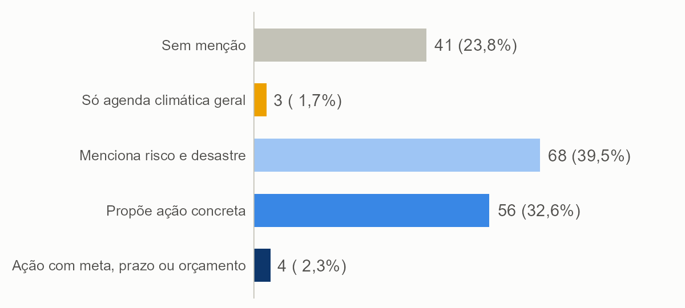
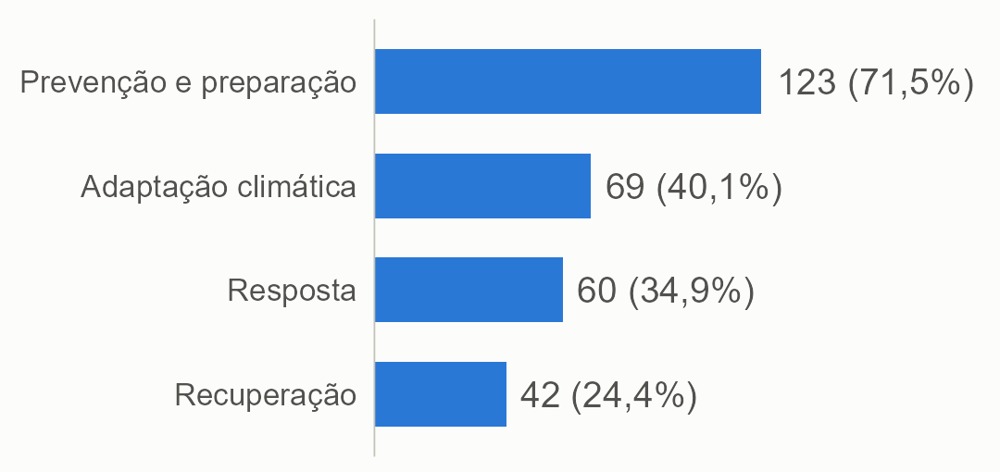
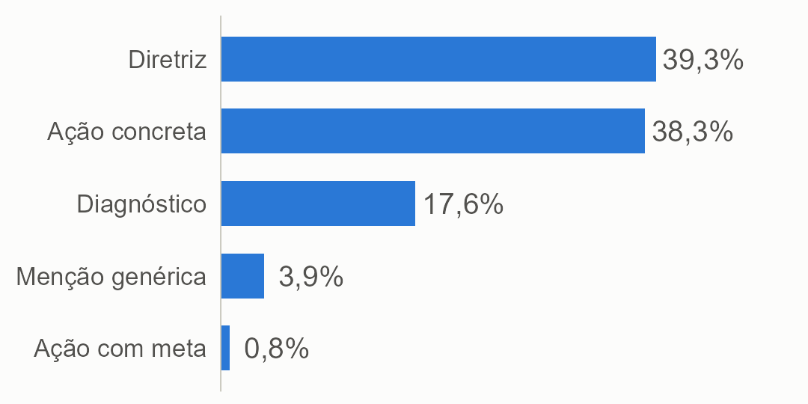
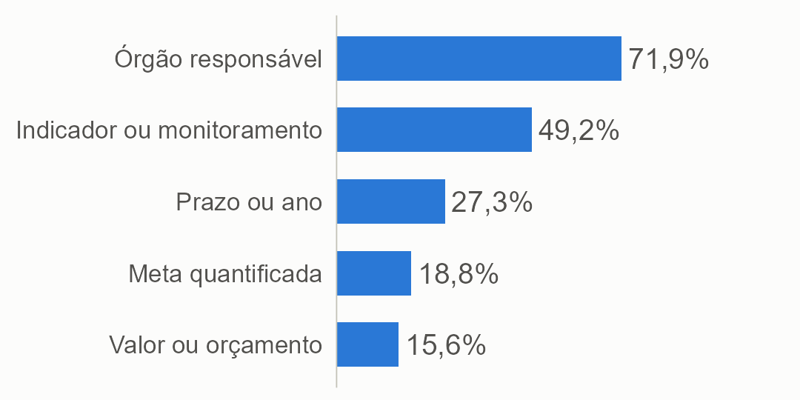

Sumário executivo · Relatório descritivo
Risco e desastre nos planos de governo dos candidatos a governador
O que {{N}} candidatos dizem, e deixam de dizer, sobre enchentes, secas, queimadas e deslizamentos, antes das eleições de 2026.
Anderson Henrique
Doutor em Ciência Política (UFPE) · Pós-doutorado, CEM/USP, com apoio da FAPESP
Pesquisador colaborador, Ipea · INCT QualiGov
Coleta congelada em {{DATA_COLETA}} · {{ANO}}
{{P_MENCAO}}%
mencionam risco ou desastre no plano
{{P_ACAO}}%
têm ação concreta na maior parte das passagens
{{N_META}}
ligam a ação a meta, prazo, indicador ou orçamento
{{N_PROM}}
prometem um valor em reais para o tema
Risco e desastre nos planos de governo (2026) · Sumário executivoHenrique, A.
1 Por que olhar os planos
O governador é um ator central antes, durante e depois de cada desastre. O plano de governo é o documento público em que a promessa fica registrada, e quase ninguém o lê por esse ângulo.
A pergunta
O que os candidatos a governador dizem, e deixam de dizer, sobre risco e desastre em seus planos de governo?
Medimos a presença do tema, as fases do ciclo de gestão de risco, os tipos de desastre e o grau de concretude, da menção genérica à ação com meta, prazo, indicador ou orçamento.
Por que importa
Pesquisas mostram que o eleitor tende a premiar o socorro depois do desastre mais do que a prevenção antes dele. Saber o que se promete antes de governar dá uma linha de base para cobrar depois da posse.
O universo
{{N_GOV}} candidaturas a governador registradas nas 27 UFs
{{N_DEF}} com candidatura deferida
{{N}} com plano de governo registrado (universo analisado)
2 Como fizemos
1ColetaPlanos em PDF, cadastro e situação da candidatura no TSE, congelados em {{DATA_COLETA}}; OCR nos escaneados.
2PassagensUm dicionário de risco e desastre seleciona frases; cada uma, com a vizinha, vira uma passagem.
3Leitura por IA localDois modelos abertos, no computador do autor, aplicam um codebook em cinco dimensões, com o pacote acR.
4ChecagemConcordância entre os modelos e revisão manual das passagens de maior concretude.
Cruzamentos
Região, estado, partido e campo político, governadores em exercício, tamanho do plano e o histórico de desastres de cada estado (Atlas Digital de Desastres, MIDR/S2iD, 2013 a 2025).
O que este relatório não é
Não avalia a qualidade das políticas nem infere intenções. A ausência de menção não significa omissão deliberada: os planos variam de centenas a dezenas de milhares de palavras.
2
Risco e desastre nos planos de governo (2026) · Sumário executivoHenrique, A.
3 O que os planos dizem
O tema é quase consensual como menção e raro como compromisso verificável.
{{N_MENCAO}}
de {{N}} candidatos ({{P_MENCAO}}%) mencionam risco ou desastre
{{N_NADA}}
não têm nenhuma menção ao tema
{{N_CICLO}}
cobrem prevenção, resposta e recuperação juntas
Maior nível de tratamento do tema por candidato

Fonte: planos de governo (TSE); classificação por modelos de linguagem.
O degrau mais numeroso é o de quem menciona o tema sem que a ação predomine ({{N_MENCIONA}} candidatos). Só {{N_ACAO}} têm ação concreta em metade ou mais das passagens, e {{N_META}} associam essa ação a meta, prazo, indicador ou orçamento.
Fases do ciclo citadas (% dos candidatos)

Os planos olham para antes do desastre
Prevenção e preparação aparecem em {{P_PREV}}% dos candidatos, contra {{P_RESP}}% de resposta e {{P_REC}}% de recuperação. Só {{P_CICLO}}% cobrem o ciclo inteiro.
As enchentes são o tipo de desastre mais citado ({{P_HIDRO}}%), seguidas da seca ({{P_SECA}}%) e das queimadas ({{P_FOGO}}%). Metade fala de desastres em geral, sem dizer qual.
3
Risco e desastre nos planos de governo (2026) · Sumário executivoHenrique, A.
4 Falar não é prometer
Menos de 1% das passagens sobre o tema traz ação com meta, prazo, indicador ou orçamento.
Especificidade das passagens (0 a 4)

O que acompanha as propostas (% dos que mencionam)

Das {{N_JANELAS}} passagens relevantes, {{PE1}}% descrevem o problema, {{PE2}}% são diretrizes sem ação identificável e {{PE3}}% são ação concreta. Os elementos que permitem cobrar uma promessa são os menos frequentes: meta quantificada ({{P_METAQ}}%), prazo ({{P_PRAZO}}%) e valor ou orçamento ({{P_ORC}}%).
Quanto dinheiro se promete
Só {{N_PROM}} candidatos põem um valor em reais na própria promessa:
| Tarcísio (SP) | R$ 25 bilhões até 2029, em adaptação |
| Carlos Machado (SP) | R$ 1,5 bilhão para Defesa Civil e bombeiros |
| Ben Mendes (MG) | R$ 300 a 520 milhões em quatro anos |
Os demais valores encontrados são balanço, crítica, dano registrado ou outro tema.
Proposta, balanço e crítica se misturam
O plano pode dizer "executamos", "os governos não fizeram" ou "vamos construir", e as três frases têm objeto concreto. Por isso revisamos à mão as passagens de nível mais alto: {{N_REB}} de {{N_REV}} foram rebaixadas por serem balanço ou crítica.
Entre os governadores em exercício, {{P_TV_INC}}% das passagens concretas trazem verbo de ação no passado, contra {{P_TV_NAO}}% nos demais.
Quem fala como
| Registro | Exemplo (trecho do plano) |
|---|
| Meta e indicador · Rafael Fonteles (PT-PI) | "Garantir que 100% dos municípios prioritários possuam plano de contingência atualizado." |
| Diretriz sem ação · Marconi Perillo (PSDB-GO) | "Municípios e comunidades precisarão estar mais preparados para eventos climáticos extremos." |
| Balanço · Raquel Lyra (PSD-PE) | "Executamos em Jardim Monte Verde a maior obra de proteção de encostas do Brasil." |
4
Risco e desastre nos planos de governo (2026) · Sumário executivoHenrique, A.
5 Território, campo político e tamanho do plano
O plano nem sempre fala do desastre que o estado sofre.
O desastre que mais atinge cada estado e a proporção de candidatos que o citam
Fonte: Atlas Digital de Desastres (S2iD/MIDR, 2013 a 2025) e planos de governo (TSE). DF* tem só 16 registros.
O descompasso
Em média, {{P_CITA_PRINC}}% dos candidatos citam o principal tipo de desastre do seu estado. No Piauí, a seca é {{PI_SHARE}}% dos registros, mas só {{PI_CITA}}% dos candidatos a citam; no Rio Grande do Sul, todos citam enchente.
{{N_NC}} candidatos não citam o principal desastre do próprio estado.
Quem mais sofre não promete mais
A intensidade dos desastres de cada estado não se associa à concretude dos planos (correlação de Spearman de {{RHO}}, ou seja, praticamente nula).
Tamanho do plano
Decide se o tema aparece: de {{P_ME_5MIL}}% nos planos com menos de 5 mil palavras a {{P_ME_20MIL}}% nos de mais de 20 mil. {{N_CURTOS}} planos têm menos de 2.000 palavras.
Campo político
Na extrema-esquerda, {{P_ME_EE}}% mencionam o tema, contra {{P_ME_DIR}}% na direita e extrema-direita e 100% na esquerda e centro-esquerda, em parte por planos mais enxutos. A concretude não muda entre campos.
Governadores em exercício
Todos os {{N_INC}} mencionam o tema e {{P_INC_ACAO}}% têm ação concreta predominante, contra {{P_NAOINC_ACAO}}% dos demais, mas seus planos são mais longos e trazem mais balanço, e por isso a diferença não deve ser lida como efeito do cargo.
5
Risco e desastre nos planos de governo (2026) · Sumário executivoHenrique, A.
6 Como ler com cuidado
Consistência não é acerto
A classificação não foi validada por codificação humana. A concordância entre os dois modelos é boa para tipos de desastre e aceitável para relevância (alfa de Krippendorff de {{ALFA_REL}}), mas fraca para a concretude ({{ALFA_ESP}}), que deve ser lida como estimativa.
Poucos casos por estado
Cada UF tem de 4 a 10 candidatos, e cada partido, menos. Os percentuais são retratos dos candidatos de 2026, e não tendências do estado ou do partido.
Ausência não é omissão
O candidato pode tratar do tema em outros espaços da campanha, ou com outras palavras, que o dicionário capta só em parte.
Exposição é registro
O Atlas reúne registros feitos pelos municípios: estados que notificam mais aparecem mais expostos.
Perguntas para acompanhar a campanha
Qual é a meta?Que ação de prevenção o candidato promete, com que meta, prazo e orçamento?
É o desastre do estado?O plano fala do desastre que mais atinge o estado, e não só de "eventos extremos"?
É proposta ou balanço?A frase diz o que será feito, ou apenas o que já se fez ou o que o outro não fez?
Transparência e replicação
Código aberto
Código, codebook, tabelas e figuras: {{REPO_CURTO}}. A leitura dos planos usa o pacote acR, de autoria do pesquisador e disponível no CRAN.
Uso de inteligência artificial
Dois modelos abertos (gpt-oss-20b e gemma-4-26b) rodaram localmente como instrumento de medida. O Claude apoiou código e versões preliminares de texto. Pergunta, codebook, revisão manual e interpretação são do autor.
Como citar. HENRIQUE, A. Risco e desastre nos planos de governo dos candidatos a governador (2026). Sumário executivo. {{ANO}}. Disponível em: {{REPO}}. Versão completa do relatório disponível no repositório. Documento técnico não revisado por pares; as opiniões são do autor e não representam posição das instituições a que se vincula.
6